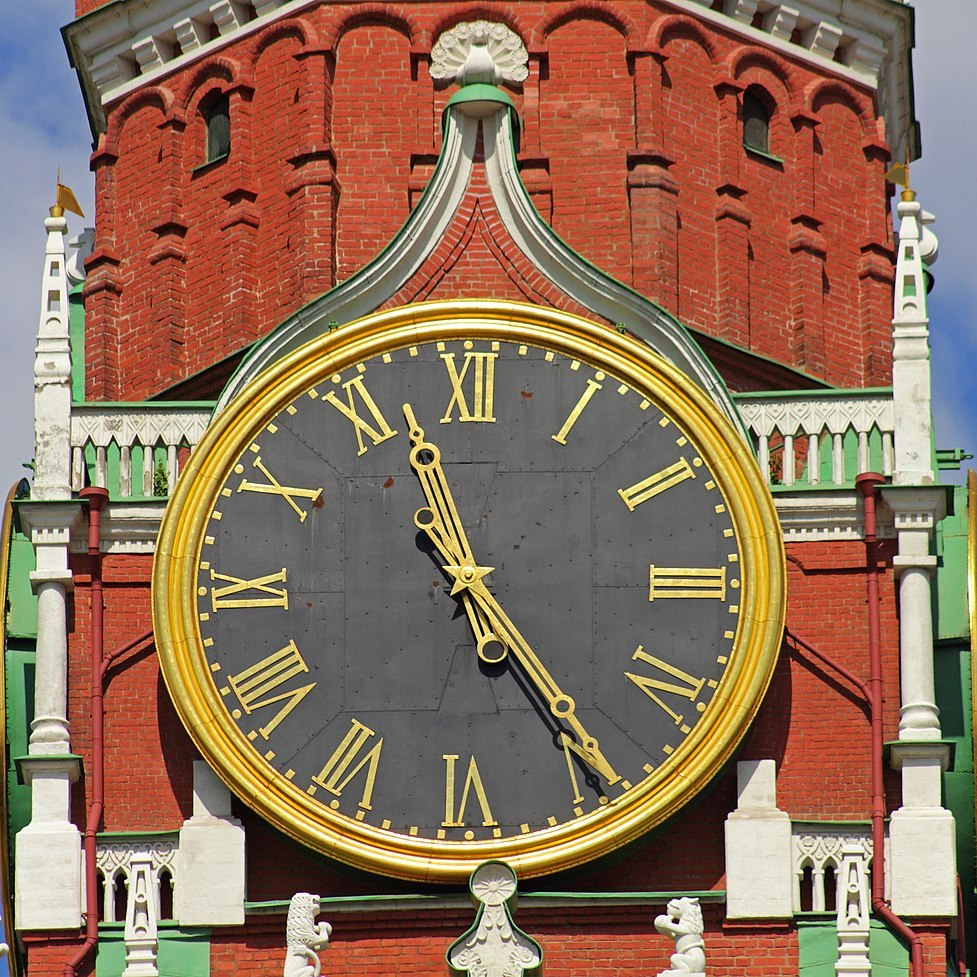

|

⚜
Часы на Спасской башне
⚜
Часы на Спасской башне — часы-куранты на Спасской башне Московского Кремля, одни из древнейших в мире. Первые часы установили в XV веке, в дальнейшем они неоднократно реставрировались и заменялись. Современные куранты появились в 1852 году и в настоящее время являются единственными полностью механическими. Ежегодно на фоне Спасской башни Президент России выступает с поздравительной речью, а звон колоколов объявляет о наступлении нового года.
⚜ История
Первоначальные часы
Первые кремлёвские часы без звона создал в 1404 году сербский монах Лазарь. Они были установлены в Часовой палате соборной Благовещенской церкви великокняжеского двора. От церкви к Кремлю вел деревянный переход.
Часы старого типа
XV—XVI века
Спасская башня была возведена в 1491 году Пьетро Антонио Солари на месте Фроловской стрельницы белокаменного Кремля, на месте бывших главных ворот для укрепления северо-восточной части. Предположительно, первоначальное название башни — Фроловская — появилось по названию церкви во имя Святых мучеников Фрола и Лавра, покровителей домашнего скота. Это название просуществовало до середины XVII века. Возможно, в глубокой древности эта церковь стояла неподалёку от ворот, однако в письменных источниках о ней нет упоминаний. Более вероятно, что название произошло от одной из трёх церквей, расположенных относительно недалеко за пределами Кремля.
Ворота были построены без ныне существующей башни. Стенообразную постройку на четыре угла накрыли шатровой кровлей, над которой установили большого двуглавого орла. В середине башни висел колокол для часового боя. Точное время появления башенных часов в Кремле неизвестно, но часовщики на службе у царя появились уже в XV веке.
Установка часов была продиктована потребностью горожан разраставшейся столицы. Вероятнее всего, первые часы были установлены на Фроловских воротах — в самом видном месте для торговцев и служителей обширного царского двора. К 1585 году часы были у Фроловской (Спасской), Тайницкой и Троицкой башен. У каждой из них на службе числились особые часовники.
XVII век
В XVII веке кремлёвские башни украсили декоративными шатрами. В 1613—1614 годах упоминается часовник при Никольских воротах. Известно, что в 1614 году часовником Фроловских ворот был Никифор Никитин, тогда же в последний раз упоминались часы в Никитской башне.
До эпохи Петра I часы на башнях были «русскими» — как называли их в то время: они делили время на дневное от рассвета и ночное от заката. По свидетельству современников, это были "…чудесные городские железные часы, знаменитые во всём свете по своей красоте и устройству и по звуку своего большого колокола, который был слышен… более чем на 10 вёрст. Английский инженер Христофор Галовей, приехавший в Россию в 1621-м, шутливо объяснял подобное строение часов: «Так как русские поступают не так, как все другие люди, то и произведённое ими должно быть устроено соответственно».
В 1624-м царь Михаил Фёдорович решил установить на Спасской башне более сложные часы по проекту Галовея. Для устройства новых часов мастер предложил увеличить высоту башни. Работы по её перестройке закончили через год, тогда же демонтировали старые часы. Новые совместе с Галовеем изготовили и русские кузнецы Ждан с сыном и внуком, литейщиком Кириллом Самойловым. Самойлов отлил к новым часам 13 колоколов.
Во время сильного пожара в мае 1626 года часы и башня полностью сгорели, восстановить их было невозможно. К 1628-му Христофор Галовей создал новые часы взамен утраченных. Мастер изготовил из дуба циферблат привычного для москвичей типа — с неподвижным внутренним кругом и подвижным внешним диском. Пятиметровый диск был поделён на 17 частей — максимальное число дневных часов в летнее время. На циферблате использовались два типа цифр: позолоченные медные славянские буквы-цифры размером в аршин и маленькие арабские цифры. Стрелкой служил длинный луч Солнца с верхней части циферблата.
5 октября 1654 года Фроловская башня снова сгорела. Во время ночного пожара пострадали часы, а колокол упал, проломил своды и разбился. Потушить пожар оказалось невозможно. Часовщик на допросе заявил, что «заводил часы без огня и от чего на башне загорелось, он про то не ведает». По словам современников, когда царь Алексей Михайлович увидел обгоревшую Спасскую башню, то горько заплакал. Восстановить часы решили только спустя 13 лет. 26 апреля 1658 года Алексей Михайлович издал указ о переименовании Фроловской башни в Спасскую — в честь помещённых со стороны Красной площади иконы Спаса Смоленского и со стороны Кремля иконы Спаса Нерукотворного:
В 1661 году посол австрийского императора барон Мейерберг зарисовал изображение Фроловских часов. В 1668 году часы отремонтировали и очистили от ржавчины. Металлические детали «мылись в большом корыте» и двое суток варились в пивном котле, затем тщательно чистились мелким речным песком, затем их протёрли ветошью и обильно «смазали квашеным салом». Отремонтированные часы прослужили до начала XVIII века и сгорели во время пожара 1701 года.
Часы современного типа
XVIII век
В 1704 году Пётр I решил установить новые часы классического вида с «немецким циферблатом», поделённым на 12 часов. Часы заказали в Амстердаме и на 30 подводах доставили в Москву через Архангельск. Установкой в Спасской башне занимался часовых дел мастер Яким Гарнель. Работы начали в 1707-м и завершили в 1709-м. Новые куранты играли колокольную музыку. В первый раз они пробили начало нового часа в 9 утра 9 декабря 1706 года. По воспоминаниям иностранцев, звон 33 колоколов слышали «в окрестных деревнях более чем на десять вёрст». Также на часах установили дополнительные колокола-набаты для оповещения о пожарах в городе. Но куранты оказались ненадежными и часто ломались.
Так как столицу перенесли в Петербург, после смерти Петра I часы не ремонтировали, и они постепенно пришли в негодность. В 1732 году часовой Гаврил Паникадильщиков писал начальству о необходимости провести ремонт обветшавших часов. Он же повторно подал прошение спустя два года.
В 1737 году, после очередного московского пожара, часы на Спасской и Троицкой башнях серьёзно пострадали. Новые колокола установили только в 1767-м по приказу императрицы Екатерины II, когда в Грановитой палате нашли большие английские курантовые часы. Работы проводил немецкий часовой мастер Фаций под руководством вице-президента Мануфактур-Коллегии Сукина. Установка заняла три года и завершилась в конце 1770-го. Фаций настроил на курантах мелодию «Ах, мой милый Августин», она звучала около года. Это единственный случай в истории страны, когда куранты играли иностранную мелодию.
XIX век
В 1812-м во время отступления из Москвы Наполеон I приказал поджечь здания и взорвать Кремль. Под многие кремлёвские сооружения заложили порох и мины. Взрыв должен был произойти одновременно с отходом последних французских солдат. Дождь частично помешал планам Наполеона, но из-за частичных взрывов произошло большое обрушение кремлёвской стены между Спасской и Беклемишевской башнями. Сами башни не пострадали.
27 октября 1850 года ученик часового дела Карчагин сообщил о плачевном состоянии механизма, работавшего почти сто лет со времён Екатерины II.
Архитектор Тон и часовые мастера братья Бутенопы — владельцы крупнейшего машинного завода — осмотрели часы и пришли к выводу, что «Спасские башенные часы в настоящее время находятся в состоянии близком к совершенному расстройству: железные колеса и шестерни от долговременности так истерлись, что в скором времени сделаются совершенно негодными, циферблаты пришли в большую ветхость. Мы, московские купцы, почетные граждане братья Бутенопы принимаем на себя переделку больших башенных часов на Спасской башне в Кремле, с тем, чтобы означенные часы в полной мере исполнили свое предназначение, показывая с верной точностью течение времени часов, минутами, боем четвертей и полных часов». Бутенопы провели капитальный ремонт и полную реконструкцию курантов. Мастера опытным путем создали новые прочные сплавы для часов и заменили все старые шестеренки на новые. Они установили новые циферблаты на всех четырёх сторонах башни, покрасили их чёрной краской, а медные числа покрыли червонным золотом, железные стрелки покрыли медью с позолотой. Для часового музыкального устройства использовали 35 колоколов, снятых с кремлевских башен и специально подобранных по тонам. Новые куранты соответствовали последним достижениям науки и техники той эпохи. На станине часов сохранилась надпись: «Часы переделаны в 1851 году Братьями Бетеноп в Москве».
Николай I распорядился оставить для звона две мелодии: «…чтобы часовые куранты разыгрывали утром Преображенский марш Петровских времён, употребляемый для тихого шага, а вечером — молитву „Коль славен наш Господь в Сионе“, обыкновенно играемую музыкантами, если обе пьесы можно будет приспособить к механизму часовой музыки». От исполнения гимна «Боже, царя храни!» колоколами император отказался. Куранты исполняли марш в 6 и 12 часов, а в 3 и 9 часов — гимн. С этой реставрации куранты отсчитывают точное московское время.
В память о работе над курантами Иван Бутеноп создал напольные часы — уменьшенную модель Спасских часов. В настоящее время они хранятся в московском Политехническом музее.
XX век
После 1851 года куранты останавливались один раз — во время революции 1917 года. Спасская башня пострадала во время штурма Кремля со стороны Воробьевых гор, когда её пыталась взять Красная гвардия. Обстрелы вели батареей 6-дюймовых орудий. Снаряд попал в кладку башни непосредственно над циферблатом и повредил маятниковую систему и несколько шестерён. В сентябре 1918-го по указу Владимира Ленина часы восстановил мастер Николай Беренс. С 18 августа 1918 года куранты играли «Интернационал» и «Вы жертвою пали…», а с 1932 года — только «Интернационал».
В 1938-м курантам потребовалась масштабная перенастройка: из-за деформации механизма от времени и морозов мелодия становилась неузнаваемой, поэтому куранты перестали ее играть на 58 лет, но продолжали отбивать часы и четверти. Следующая серьёзная реставрация была проведена в 1974-м.
Мелодия на часах появилась только в конце века: они снова заиграли в 1996-м во время инаугурации Бориса Ельцина. В 12 и 6 часов звучала «Патриотическая песня», а в 3 и 9 часов — «Славься» из оперы «Иван Сусанин».
Во время реставрации 1999 года были позолочены стрелки и цифры часов, восстановлен исторический облик верхних ярусов курантов, а вместо «Патриотической песни» зазвучал гимн России.
⚜ Современность
В октябре 2014 года началась плановая реставрация стен Кремля и часов на Спасской башне. Сам механизм на время реставрации останавливали только кратковременно — из-за чего комендатура Кремля получала множество звонков от желающих сообщить о происшествии с курантами. На время ремонта Спасскую башню и Кремлёвские куранты закрыли лесами. Башню укрыли плотной и звукопоглощающей тканью для сохранения теплового режима и микроклимата. Реставраторы провели работу с наружными частями часов и с их механизмом. В это время колокольный звон передавали по записи через динамики, специально установленные на десятом ярусе башни. В новогоднюю ночь 2015 года на строительные конструкции Спасской башни был спроецирован её вид со стороны Лобного места и мавзолея.
В настоящее время на звоннице находятся 14 колоколов. Они вызванивают государственный гимн в полдень и полночь, а также в 6 утра и 18 часов, «Славься» Михаила Глинки исполняется в 3 и 9 утра, 15 часов и 21 час. Главный колокол бьёт каждый час.
⚜ Технические данные
В настоящее время Кремлёвские куранты — единственные полностью механические часы в мире, и работают в одном режиме уже более 150 лет, являясь самыми древними в Европе. Вес механизма без колоколов составляет 25 тонн. Он состоит из нескольких тысяч деталей. Точность хода достигается благодаря маятнику весом 32 кг. Высота часового механизма — около 3 м, диаметр больших шестерён — до 1,5 м. Механизм стрелок приводится в действие тремя гирями весом от 160 до 224 кг и уходит вглубь стены почти на 20 метров. Главный колокол Спасской башни весит 2160 кг. Музыкальный механизм выглядит как программный медный цилиндр, который вращает 200-килограммовая гиря. Барабан заставляет штифты нажимать на клавиши, связанные тросами с колоколами на звоннице.
Считается, что удары колокола в полночь 31 декабря возвещают наступление нового года. На самом деле новый час, день и год начинаются с началом перезвона курантов, то есть за 20 секунд до первого удара колокола.
|
|